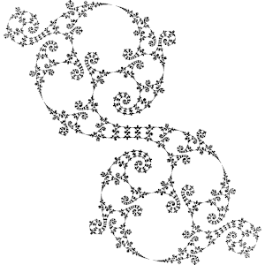
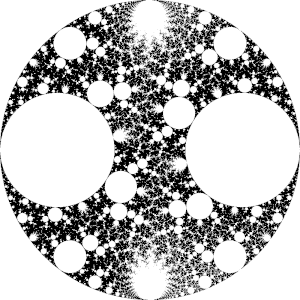

Kleinian groups and fractals (Mathcamp 2021)
 
The above fractals were generated using Kleinian groups. You can generate more fractals like these here.
Behind these drawings is a mathematical principle called uniformization, which connects geometry, topology, and group theory.
Prerequisites
I will assume that you are familiar with complex numbers, the definition of a group, and (2×2) matrices.
Further reading
- Most of the material in this class is covered in the excellent book Indra’s Pearls by Mumford, Series, and Wright.
- Fuchsian uniformization is covered in a bit more depth in The Symmetries of Things by Conway, Burgiel, and Goodman-Strauss.
- Fricke and Klein produced some surprisingly nice pictures of fractals in 1897! See pages 418-445.